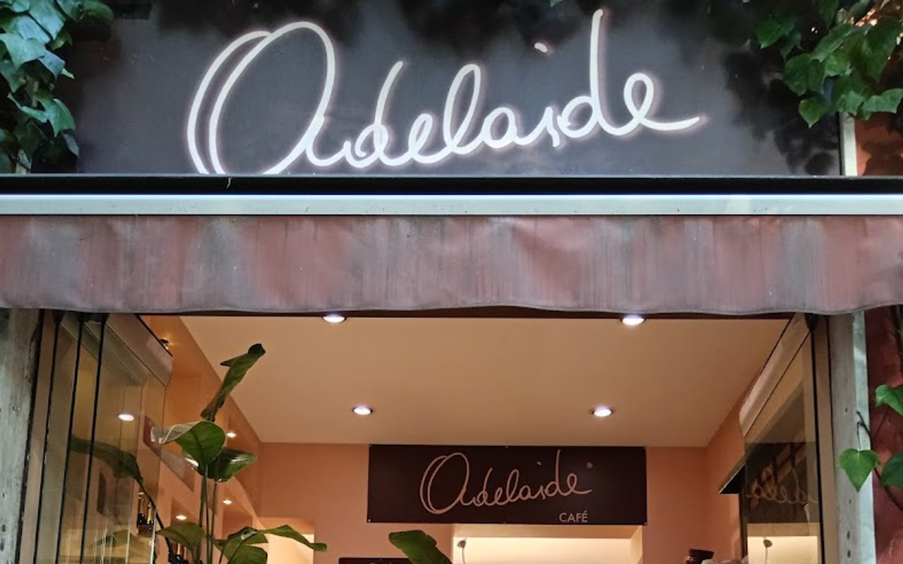
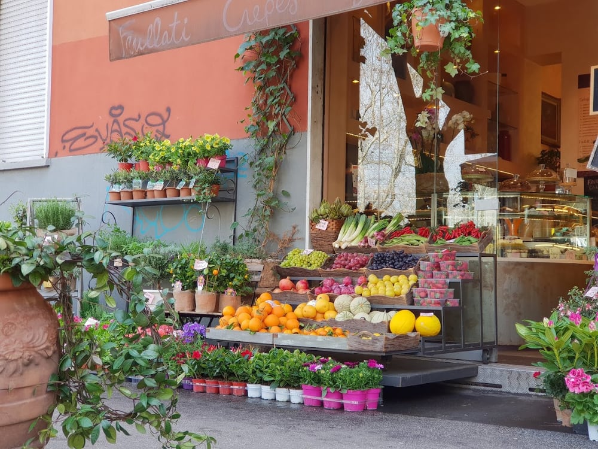
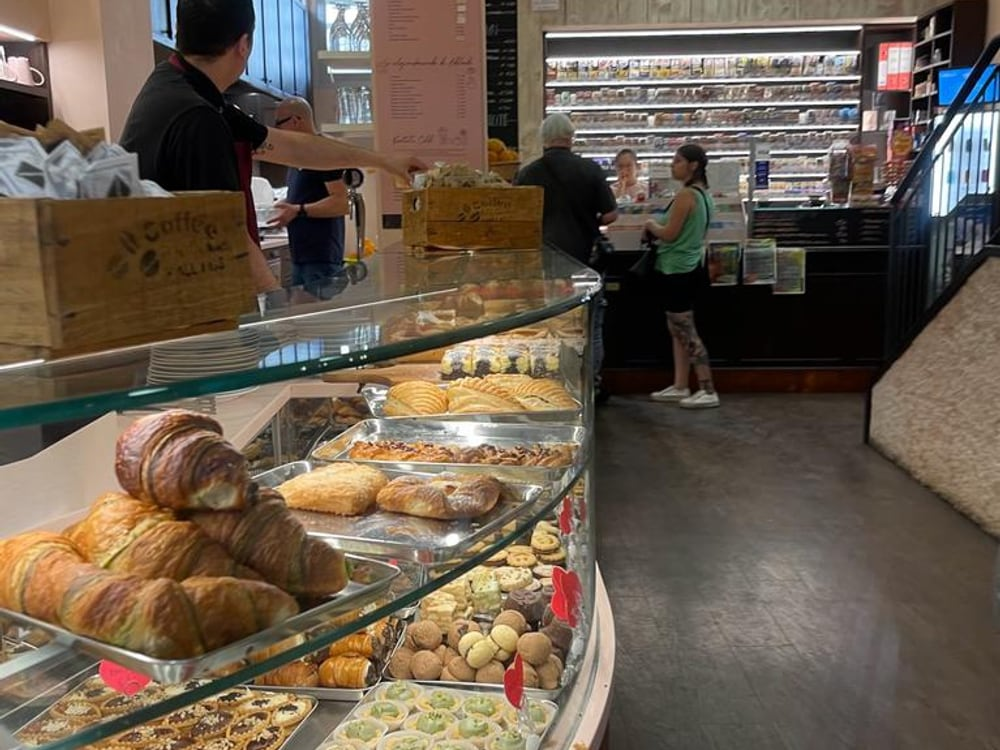
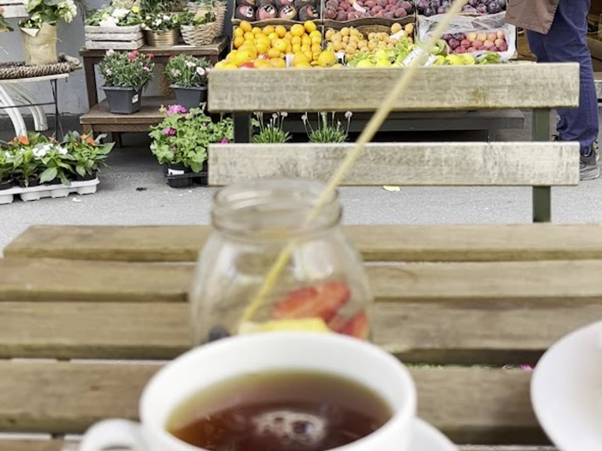
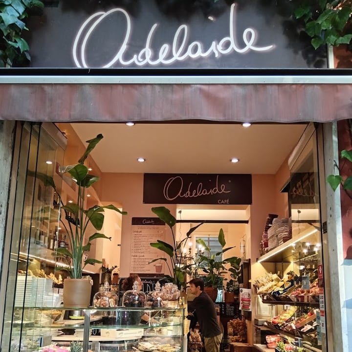
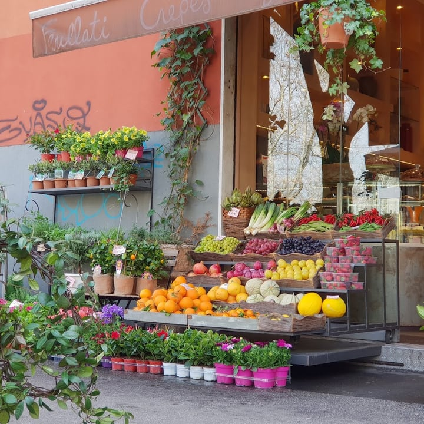
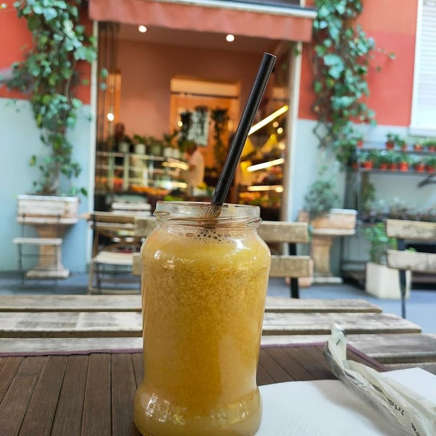
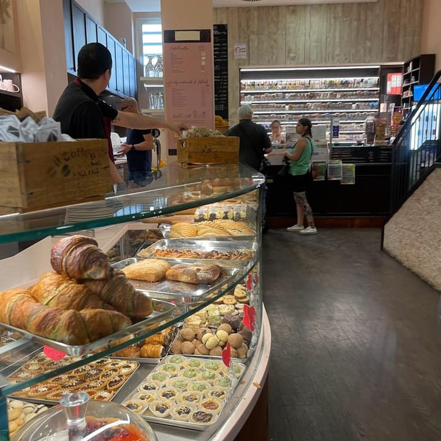
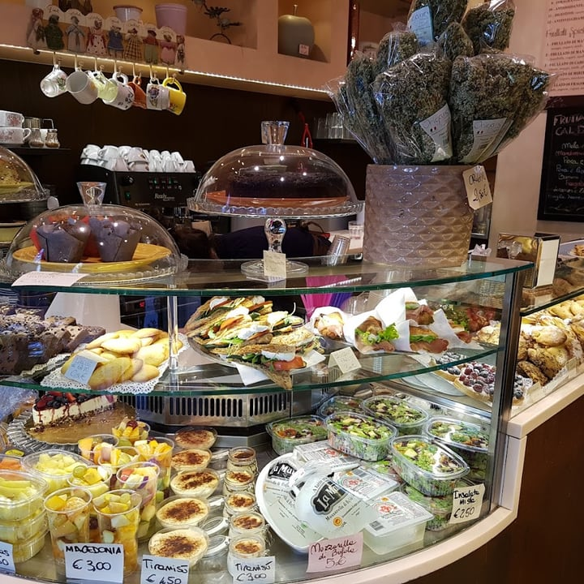
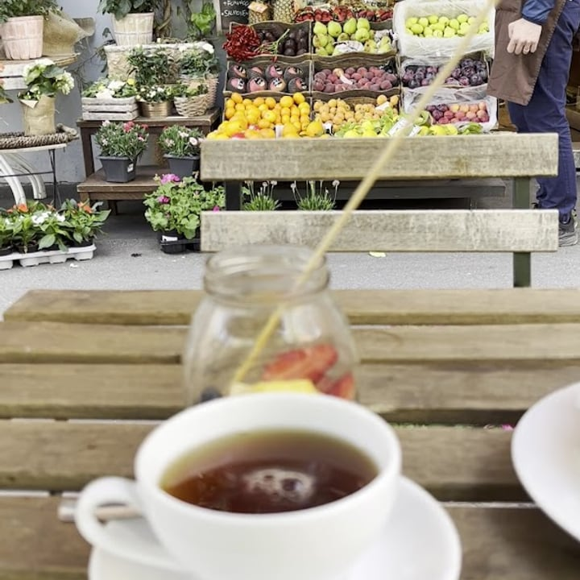

Frutta & verdura
Fresca ogni giorno, e i cesti di frutta su ordinazione.

4,2 · 449 recensioni · Google
Più di una frutteria — il posto che non ti aspetti
Frutta e verdura che diventano frullati, crêpes e colazione — tra piante e fiori, con il dehor. A Piazzale Segesta.
Non un semplice negozio di frutta
Entri per la frutta e scopri un posto: il bar che non ti aspetti. Sei mondi freschi sotto lo stesso neon.
Fresca ogni giorno, e i cesti di frutta su ordinazione.
Preparati al momento — «buonissimi», dicono.
Dolci e salate, per una pausa che non pesa.
Brioche, torte, pasticcini. Caffè e tè.
Anche veg e vegani, per un pranzo leggero.
Il verde che ti porti a casa.

Frutta, verdura & fiori
Cassette di frutta e verdura scelte ogni giorno, e accanto piante e fiori: la vetrina di Adelaide è già un buonumore. Frutta e verdura «eccezionale», dicono i clienti.
E se cerchi un pensiero, i cesti di frutta su ordinazione — piccoli o grandi — sono un regalo che piace sempre.
Frullati & centrifughe
Centrifughe e frullati preparati al momento con la frutta del banco: il modo più fresco di fare una pausa. «Consiglio le centrifughe, sono buonissime» — e con questo caldo, al dehor, è tutta un'altra storia.

Colazione & dolci
Brioche, muffin, torte, pasticcini — dolce e salato, tanto per grandi quanto per piccini. Con il caffè, il cappuccino o un tè, per iniziare la giornata con calma.
Il posto
Adelaide è un posto luminoso e accogliente, dove ci si ferma a conversare con amici e colleghi mentre si gustano le specialità della proprietaria. Con il dehor per le belle giornate.
Un'attività di proprietà di donne, bimbo-friendly e LGBTQ+ friendly: qui sono tutti i benvenuti.

Adelaide






Dicono di noi
«Adelaide non è un semplice negozio di frutta e verdura, ma un posto intimo dove conversare mentre gusti le specialità della proprietaria. Ottimi i taglieri vegetariani e vegani.»
E M · Local Guide
«Il bar che non ti aspetti a Milano. Frutta e verdura in esposizione, torte e brioche, frullati… e lo spazio esterno con i tavolini in legno. Una gradevole sorpresa!»
Bernardo M. · Local Guide
«Ottimo posto per una centrifuga o delle omelette. Consiglio le centrifughe: sono buonissime.»
Vincenzo E. · Local Guide
«Un bellissimo posto per pranzo, colazione o merenda. Cibo di ottima qualità e bimbo-friendly. Molto piacevole il dehor.»
Anna DG · Local Guide
Dove & orari
Piazzale Segesta, 20148 Milano · zona San Siro, a due passi dalla M5 Segesta.
—
| Lunedì | 07:00–19:30 |
|---|---|
| Martedì | 07:00–19:30 |
| Mercoledì | 07:00–19:30 |
| Giovedì | 07:00–19:30 |
| Venerdì | 07:00–19:30 |
| Sabato | 07:00–15:00 |
| Domenica | Chiuso |
Domande frequenti
Frutta e verdura fresca, frullati e centrifughe, crêpes dolci e salate, colazione, brioche e dolci, insalate e taglieri veg e vegani. E poi piante e fiori. Più di una frutteria.
Sì: un posto intimo con il dehor, dove fermarsi per colazione, pranzo o merenda. Bimbo-friendly e LGBTQ+ friendly.
Sì, su ordinazione, piccoli e grandi — un pensiero fresco perfetto da regalare.
Da lunedì a venerdì 7:00–19:30; sabato 7:00–15:00. Domenica chiuso.
In Piazzale Segesta a Milano, zona San Siro. Telefono 377 091 9842.